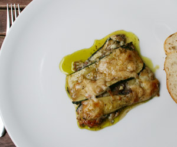

Zucchini Parmigiana
5 von 6Zucchini in feine Scheiben schneiden und auf einem Blech mit etwas Olivenöl bei ca. 200 Grad im Ofen garen. In eine Auflaufform eine Schicht Zucchini auslegen. Mozarella und Basilikum darüber geben. Zwiebel, Knoblauch und Chili (angedämpft) ebenfalls darüber verteilen. Diesen Vorgang wiederholen so dass entsprechende Schichten entstehen. Über die letzte Schicht Parmesan geben und im Ofen überbacken. Passt hervoragend zu einem Lammrücken (siehe Bild).
